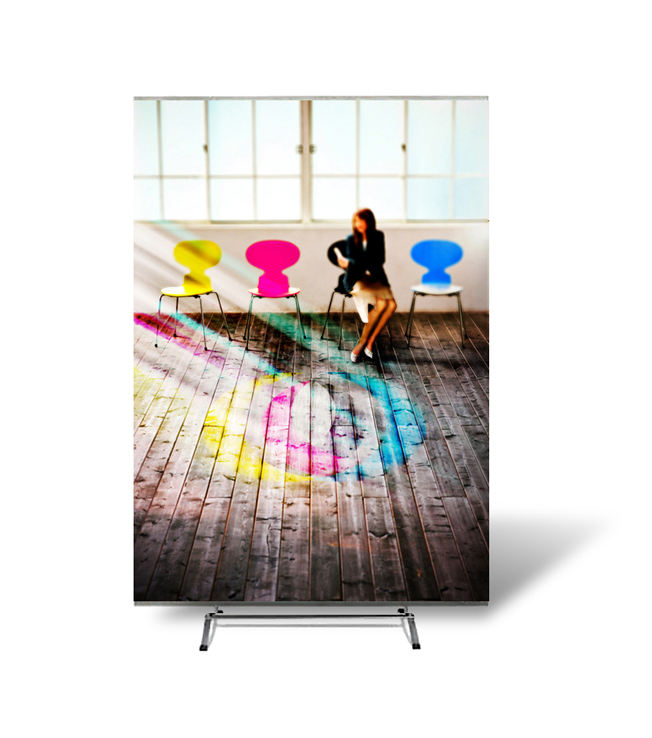

From Wikipedia, the free encyclopedia
Graphic design is a profession ,[2] academic discipline [3][4][5] and applied art whose activity consists in projecting visual communications intended to transmit specific messages to social groups, with specific objectives. [6] Graphic design is an interdisciplinary branch of design [1] and of the fine arts. Its practice involves creativity, innovation and lateral thinking using manual or digital tools , where it is usual to use text and graphics to communicate visually.

The role of the graphic designer in the communication process is that of encoder or interpreter of the message. They work on the interpretation, ordering, and presentation of visual messages. Usually, graphic design uses the aesthetics of typography and the compositional arrangement of the text, ornamentation, and imagery to convey ideas, feelings, and attitudes beyond what language alone expresses. The design work can be based on a customer's demand, a demand that ends up being established linguistically, either orally or in writing, that is, that graphic design transforms a linguistic message into a graphic manifestation. [7]
Graphic design has, as a field of application, different areas of knowledge focused on any visual communication system. For example, it can be applied in advertising strategies, or it can also be applied in the aviation world [8] or space exploration. [9][10] In this sense, in some countries graphic design is related as only associated with the production of sketches and drawings, this is incorrect, since visual communication is a small part of a huge range of types and classes where it can be applied.
With origins in antiquity and the Middle Ages, [11] graphic design as applied art was initially linked to the boom of rise of printing in Europe in the 15th century and the growth of consumer culture in the Industrial Revolution. From there it emerged as a distinct profession in the West, closely associated with advertising in the 19th century [12] and its evolution allowed its consolidation in the 20th century. Given the rapid and massive growth in information exchange today, the demand for experienced designers is greater than ever, particularly because of the development of new technologies and the need to pay attention to human factors beyond the competence of the engineers who develop them. [13]
William Addison Dwiggins is often credited with first using the term "graphic design" in a 1922 article,[14] although it appears in a 4 July 1908 issue (volume 9, number 27) of Organized Labor, a publication of the Labor Unions of SanFrancisco, in an article about technical education for printers: [15]
An Enterprising Trades Union
… The admittedly high standard of intelligence which prevails among printers is an assurance that with the elemental principles of design at their finger ends many of them will grow in knowledge and develop into specialists in graphic design and decorating. …
A decade later, the 1917–1918 course catalog of the California School of Arts & Crafts advertised a course titled Graphic Design and Lettering, which replacedone called Advanced Design and Lettering. Both classes were taught by Frederick Meyer. [16]
Main article: History of graphic design
In both its lengthy history and in the relatively recent explosion of visual communication in the 20th and 21st centuries, the distinction between advertising, art, graphic design and fine art has disappeared. They share many elements, theories, principles, practices, languages and sometimes the same benefactor or client. In advertising, the ultimate objective is the sale of goods and services. In graphic design, "the essence is to give order to information, form to ideas, expression, and feeling to artifacts that document the human experience." [17]
The definition of the graphic designer profession is relatively recent concerning its preparation, activity, and objectives. Although there is no consensus on an exact date when graphic design emerged, some date it back to the Interwar period. Others understand that it began to be identified as such by the late 19th century. [11]
It can be argued that graphic communications with specific purposes have their origins in Paleolithic cave paintings and the birth of written language in the third millennium BCE. However, the differences in working methods, auxiliary sciences, and required training are such that it is not possible to clearly identify the current graphic designer with prehistoric man, the 15th-century xylographer, or the lithographer of 1890.
The diversity of opinions stems from some considering any graphic manifestation as a product of graphic design, while others only recognize those that arise as a result of the application of an industrial production model—visual manifestations that have been "projected" to address various needs: productive, symbolic, ergonomic, contextual, among others.
Nevertheless, the evolution of graphic design as a practice and profession has been closely linked to technological innovations, social needs, and the visual imagination of professionals. [18] Graphic design has been practiced in various forms throughout history; in fact, good examples of graphic design date back to manuscripts from ancient China, Egypt, and Greece. As printing and book production developed in the 15th century, advances in graphic design continued over the subsequent centuries, with composers or typographers often designing pages according to established type. [11]
By the late 19th century, graphic design emerged as a distinct profession in the West, partly due to the process of labor specialization that occurred there and partly due to the new technologies and business possibilities brought about by the Industrial Revolution. New production methods led to the separation of the design of a communication medium (such as a poster) from its actual production. Increasingly, throughout the 19th and early 20th centuries, advertising agencies, book publishers, and magazines hired art directors who organized all visual elements of communication and integrated them into a harmonious whole, creating an expression appropriate to the content. In 1922, typographer William A. Dwiggins coined the term graphic design to identify the emerging field. [11]
Throughout the 20th century, the technology available to designers continued to advance rapidly, as did the artistic and commercial possibilities of design. The profession expanded greatly, and graphic designers created, among other things, magazine pages, book covers, posters, CD covers, postage stamps, packaging, brands, signs, advertisements, kinetic titles for TV programs and movies, and websites. By the early 21st century, graphic design had become a global profession as advanced technology and industry spread worldwide. [11]
In China, during the Tang dynasty (618–907) wood blocks were cut to print on textiles and later to reproduce Buddhist texts. A Buddhist scripture printed in 868 is the earliest known printed book. Beginning in the 11th century in China, longer scrolls and books were produced using movable type printing, making books widely available during the Song dynasty (960–1279). [19]
In the mid-15th century in Mainz, Germany, Johannes Gutenberg developed a way to reproduce printed pages at a faster pace using movable type made with a new metal alloy [20] that created a revolution in the dissemination of information. [21]
In 1849, Henry Cole became one of the major forces in design education in Great Britain, informing the government of the importance of design in his Journal of Design and Manufactures. He organized the Great Exhibition as a celebration of modern industrial technology and Victorian design.
From 1891 to 1896, William Morris' Kelmscott Press was a leader in graphic design associated with the Arts and Crafts movement, creating hand-made books in medieval and Renaissance era style, [22] in addition to wallpaper and textile designs. [23] Morris' work, along with the rest of the Private Press movement, directly influenced Art Nouveau. [24]
Will H. Bradley became one of the notable graphic designers in the late nineteenth-century due to creating art pieces in various Art Nouveau styles. Bradley created a number of designs as promotions for a literary magazine titled The Chap-Book. [25]
In 1917, Frederick H. Meyer, director and instructor at the California School of Arts and Crafts, taught a class entitled "Graphic Design and Lettering". [26] Raffe's Graphic Design, published in 1927, was the first book to use "Graphic Design" in its title. [27]
In 1936, author and graphic designer Leon Friend published his book titled "Graphic Design" and it is known to be the first piece of literature to cover the topic extensively. [28]
The signage in the London Underground is a classic design example [29] of the modern era. Although he lacked artistic training, Frank Pick led the Underground Group design and publicity movement. The first Underground station signs were introduced in 1908 with a design of a solid red disk with a blue bar in the center and the name of the station. The station name was in white sans-serif letters. It was in 1916 when Pick used the expertise of Edward Johnston to design a new typeface for the Underground. Johnston redesigned the Underground sign and logo to include his typeface on the blue bar in the center of a red circle. [30]
In the 1920s, Soviet constructivism applied 'intellectual production' in different spheres of production. The movement saw individualistic art as useless in revolutionary Russia and thus moved towards creating objects for utilitarian purposes. They designed buildings, theater sets, posters, fabrics, clothing, furniture, logos, menus, etc. [31]
Jan Tschichold codified the principles of modern typography in his 1928 book, New Typography. [32] He later repudiated the philosophy he espoused in this book as fascistic, but it remained influential. [citation needed] Tschichold, Bauhaus typographers such as Herbert Bayer and László Moholy-Nagy and El Lissitzky greatly influenced graphic design. They pioneered production techniques [ [citation needed] and stylistic devices used throughout the twentieth century. The following years saw graphic design in the modern style gain widespread acceptance and application. [33]
The professional graphic design industry grew in parallel with consumerism. This raised concerns and criticisms, notably from within the graphic design community with the First Things First manifesto. First launched by Ken Garland in 1964, it was re-published as the First Things First 2000 manifesto in 1999 in the magazine Emigre 51 [34] stating "We propose a reversal of priorities in favor of more useful, lasting and democratic forms of communication – a mindshift away from product marketing and toward the exploration and production of a new kind of meaning. The scope of debate is shrinking; it must expand. Consumerism is running uncontested; it must be challenged by other perspectives expressed, in part, through the visual languages and resources of design." [35]
Graphic design can have many applications, from road signs to technical schematics and reference manuals. It is often used in branding products and elements of company identity such as logos, colors, packaging, labelling and text.
From scientific journals to news reporting, the presentation of opinion and facts is often improved with graphics and thoughtful compositions of visual information – known as information design. With the advent of the web, information designers with experience in interactive tools are increasingly used to illustrate the background to news stories. Information design can include Data and information visualization, which involves using programs to interpret and form data into a visually compelling presentation, and can be tied in with information graphics.
A graphic design project may involve the creative presentation of existing text, ornament, and images.
messages are transmitted and by which senders and receivers encode and decode these messages. The semiotic school treats a message as a construction of signs which through interaction with receivers, produces meaning; communication as an agent. [citation needed]
Typography includes type design, modifying type glyphs and arranging type. Type glyphs (characters) are created and modified using illustration techniques. Type arrangement is the selection of typefaces, point size, tracking (the space between all characters used), kerning (the space between two specific characters) and leading (line spacing).
Typography is performed by typesetters, compositors, typographers, graphic artists, art directors, and clerical workers. Until the digital age, typography was a specialized occupation. Certain fonts communicate or resemble stereotypical notions. For example, 1942 Report is a font which types text akin to a typewriter or a vintage report. [36]
Page layout deals with the arrangement of elements (content) on a page, such as image placement, text layout and style. Page design has always been a consideration in printed material and more recently extended to displays such as web pages. Elements typically consist of type (text), images (pictures), and (with print media) occasionally place-holder graphics such as a dieline for elements that are not printed with ink such as die/ laser cutting , foil stamping or blind embossing.

A grid serves as a method of arranging both space and information, allowing the reader to easily comprehend the overall project. Furthermore, a grid functions as a container for information and a means of establishing and maintaining order. Despite grids being utilized for centuries, many graphic designers associate them with Swiss design. The desire for order in the 1940s resulted in a highly systematic approach to visualizing information. However, grids were later regarded as tedious and uninteresting, earning the label of "designersaur." Today, grids are once again considered crucial tools for professionals, whether they are novices or veterans. [37]